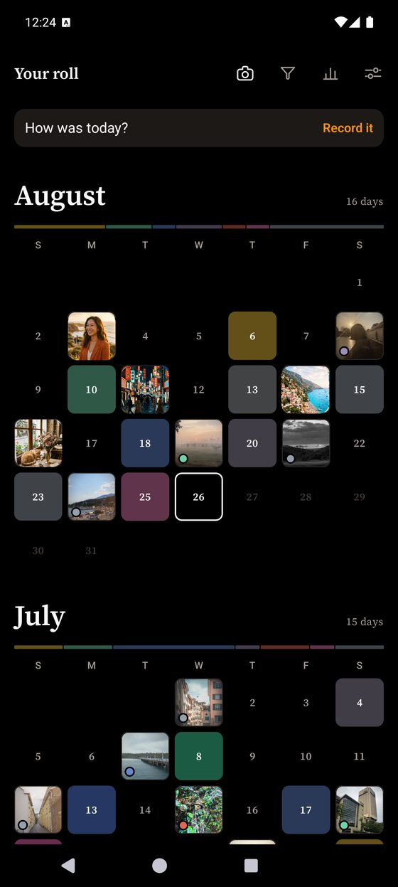
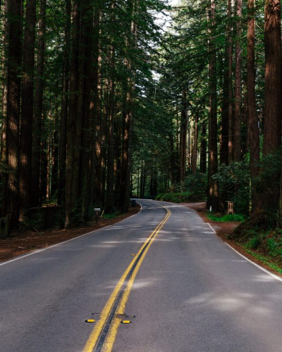
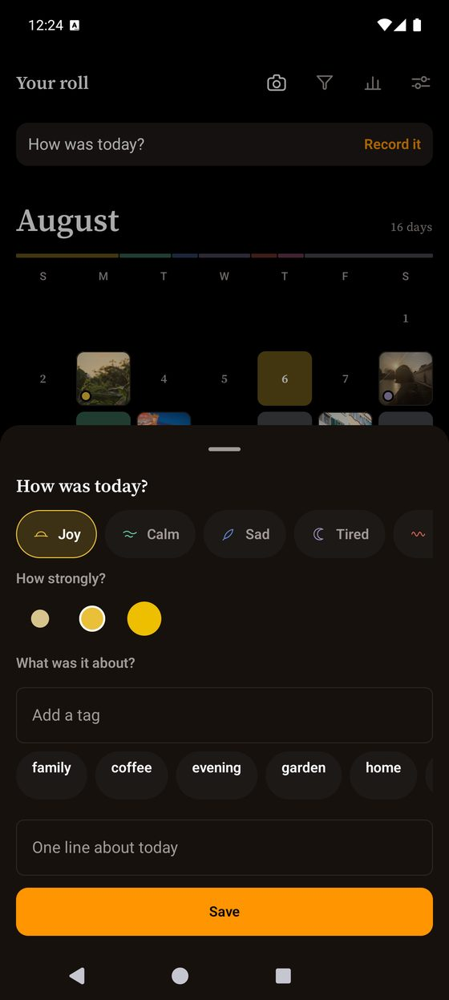
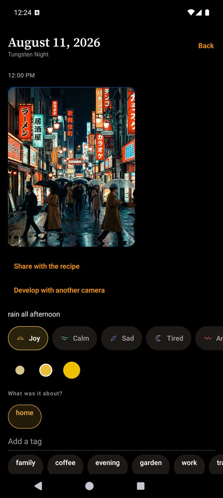
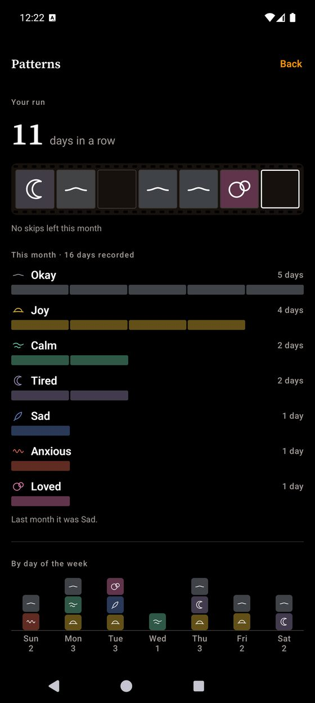
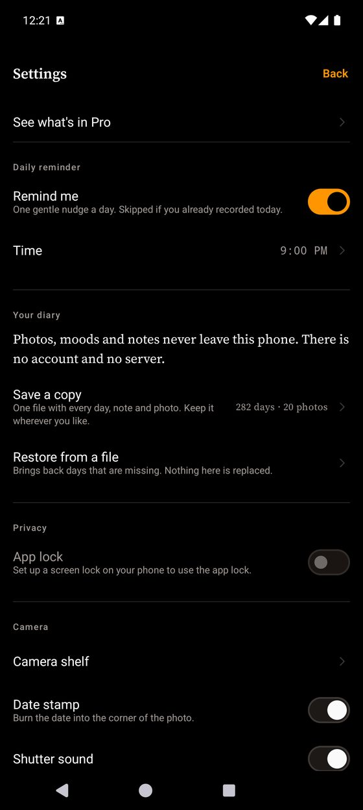

Photo mood journal · Android
A mood journal made of photographs.
Give the day a colour. Shoot it on one of 24 cameras. Weeks later the month is a grid you can read without a word of it.
No account, no server, no cloud sync. Nothing you write or shoot leaves your phone.

A camera, not a filter
Drag the handle. The left is the frame as the camera received it; the right is what that camera hands back. Grain, halation, lens softness and vignette are built per shot, at capture — not stamped over a picture that was already finished.


This is the whole difference, and it is why the diary is worth reopening. A filter is a layer laid on top of a photograph. A camera decides how the light lands in the first place — so the softness is in the picture rather than on it, and the same day shot twice on two cameras is two different photographs.
Every frame here is a packaged sample photograph, run through the app's own render chain. Nothing on this page was retouched by hand.
24 cameras, not 24 filters
Three are free forever at full quality — not weakened versions, but three of the 24. Every photograph below was made by the camera it sits under.

Gold Hour Free
Warm and nostalgic — made for late afternoon light

Soft Portrait Pro
Soft skin, low contrast, quiet colour

Everyday Pro
Cool greens, everyday snapshots

Tungsten Night Pro
For warm indoor light — shadows fall teal

Mono Grit Pro
Black and white, coarse grain, hard contrast

One-Shot Pro
Single-use camera — heavy vignette, 27 frames

Pocket '96 Free
90s compact — neutral, slightly cool

CCD '03 Free
Early-2000s digicam — punchy, saturated, a little harsh

Handycam Pro
Flat, greenish, old video tape

Instant Square Pro
White border, lifted blacks, instant film

Instant Mini Pro
Bright, soft, a hint of pink

Expired Roll Pro
Faded, colour-shifted, light leaks
Infra Pink Pro
Leaves come back pink — for parks, trees, anything green

Silver Bleach Pro
Colour drained, blacks deep — hard light suits it

Cross Lab Pro
Developed in the wrong chemicals — cyan shadows, 36 frames

Slide 64 Pro
Dense colour, deep blacks — give it good light

Pale Wash Pro
Muted and matte — the quiet one

Taiga Pro
Muted colour, blue-green foliage

Arizona Pro
Soft desert warmth, turquoise skies

Calypso Pro
Summer blues and sunlit oranges

Cine Pro
Orange light against teal shadows

Apollo Pro
Rose reds for the last light

Vista Pro
Clear greens and open blue skies

Chrome Pro
Dense colour with violet shadows
24 cameras
Two taps and the day is kept
One of seven colours, and how strongly. A note if you want one, a tag if you want one, and a photograph only if you feel like taking one. Most days are a colour and nothing else, and the diary is built for that rather than in spite of it.

Go back and say more
A day holds its photographs, what it felt like, and anything you want to write down. Nothing is locked once it is saved — you can come back a week later and add the sentence you could not find at the time, or develop the same frame again on another camera.

It counts. It does not judge.
Insight counts your days back to you and stops there — no score, no trend warning, no advice about your own life. The streak counts days and never counts down: miss one and it is forgiven, twice a month, and today never counts against you because the day is not over.

Nothing leaves your phone
No account, no server, no cloud sync — and the diary is excluded from Android's automatic Google Drive backup, which is on by default for most apps. There is no usage analytics in the app at all. Crash reports go to Google Firebase so bugs can be fixed on phones we cannot hold; they never carry a photograph, a note, or which mood you tagged.
The privacy policy writes all of it out in plain language. Location tagging is off by default, and its coordinates are never uploaded. No ads. Not now, not later.

The shape of a month
Most mood trackers record a day as an emoji and a line of text, and there is nothing to come back to. Give the day a colour instead and weeks later the timeline is a grid of colour — the shape of a month, readable without a word of it.
The empty squares are the point. A gallery cannot draw the days you did not write.


The camera behaves like a camera
Three settings under the shutter and no menu behind them.
- Auto · Portrait · Double exposure One frame with the lens set for you, one frame with the aperture ring in your hand, or two frames on one negative with seven ways for the two to meet.
- The border is part of the picture Keep the one the camera prints, or put every photograph inside a square instant, a mini instant or a 35 mm film strip. The viewfinder reframes to match.
- Rolls that run out The single-use camera gives you 27 frames before you load a new one. The early digicam shoots at its own small sensor size, so the softness is in the picture instead of on it.
- Hand a camera to somebody Send any of them as a short code or a small file, including one you built yourself. Opening one costs nothing and needs no subscription, on any tier.
The camera is a Quick Settings tile too, so the viewfinder is one tap from the notification shade.
What Pro adds
21 more cameras, and the things you build with them.
- All 24 cameras.
- Build your own camera. Pick the film, the grain, the lens, the border, and how many frames the roll holds. Give it a name.
- Record a day straight from the home-screen widget, in two taps, without opening the app.
- A second widget that keeps your latest photograph on the home screen, with its mood and the camera that took it.
- App lock, with your fingerprint or your screen lock.
Available as a monthly or yearly subscription, or as a one-time purchase. Prices, and any free trial you are eligible for, are shown in the app.
The free tier keeps your whole diary. Every day you record stays, and stays visible — nothing is hidden behind the price, and nothing is ever deleted.
Requirements
Android 7.0 or newer, and a camera. The camera and the diary work with no connection at all.